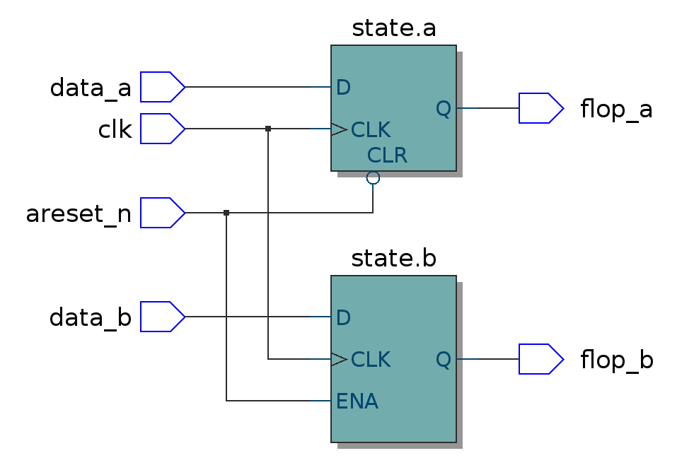
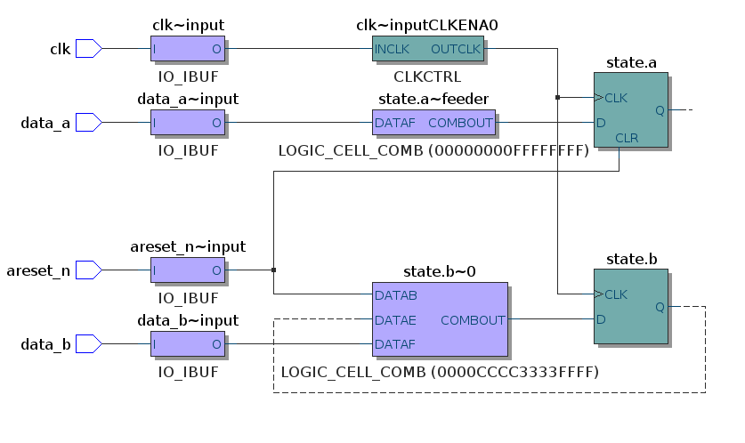
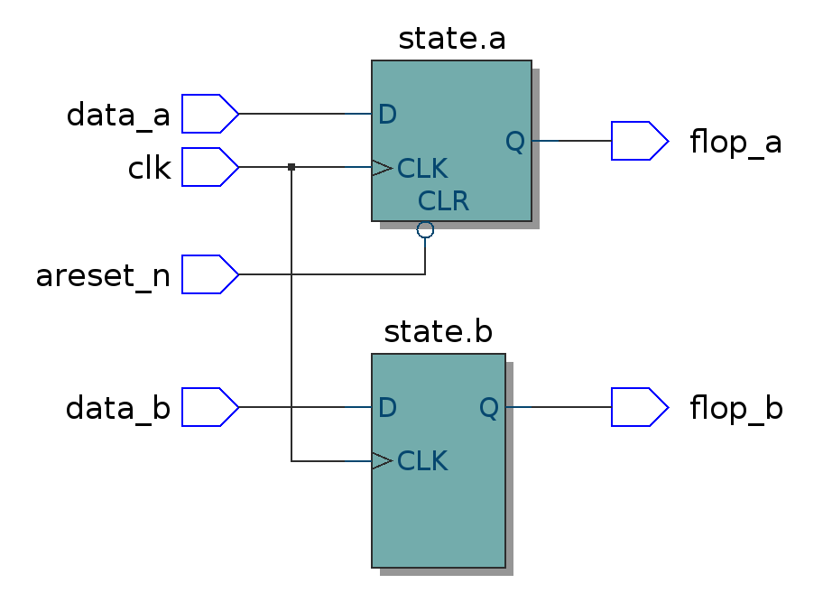

Reset Roulette
Posted by Chris Higgs in Blog
Resets have always been a source of occasional aggravation for FPGA designers. This blog post expands on a StackOverflow answer I wrote a while ago describing some of the gotchas.
Confusing Conflicts
If we explore the problem space we can see why resets can be tricky.
Firstly we have different best practice advice from the major FPGA vendors. Xilinx advise users implement synchronous resets, whereas Altera recommend using asynchronous resets (that are synchronously de-asserted). So if we are writing code that we intend to be portable, which reset strategy should we employ?
Secondly we have the possibility that we may accidentally infer additional logic around our reset. If a clocked process with an asynchronous reset the synthesis tool will insert a clock-enable for any flip-flops that aren't reset. This typically doesn't map to a native architecture and as we'll see below can lead to extra logic being inserted into the design, slowing timing and increasing resource usage.
Recommendations vary - from Cliff Cummings recommendation of writing separate processes for flops that are reset and flops that aren't, to Xilinx encouraging users to reset using reconfiguration of the device rather than a using a global reset.
Unintended Consequences
Let's take a closer look at the issues when combining flip flops that aren't reset in the same process as flops that are. Consider the following example:
typedef struct packed {
logic a;
logic b;
} state_t;
state_t state;
always_ff @(posedge clk or negedge areset_n) begin
if (~areset_n) begin
state.a <= 1'b0;
end else begin
state.a <= data_a;
state.b <= data_b;
end
end
Using Quartus, the code above results in the following logic:
We see that areset_n has been connected to ENA of the state.b flip-flop. At first glance it's easy to miss the implications of this, but taking a look at the technology mapped implementation the problem is evident:
We can now see that the mapper has inserted a LUT between data_b and our flip-flop. Since there is no native support for an asynchronous enable in the Altera flip-flops, Quartus has to emulate this capability by feeding the output of the flop back into a LUT.
This if course adds an extra level of logic to the path, using more routing resources, eating into our timing margin and consuming LUTs unnecessarily.
We've used SystemVerilog features to improve the quality of the code, grouping signals together into a struct and taking advantage of the the additional protection provided by always_ff. These features exacerbate our difficulties. We cannot split state.b into a separate process since the always_ff construct prevents us from driving state from multiple processes.
As described in the StackOverflow answer, we can avoid inferring the unneccessary logic by assigning state.b <= 'x; in the reset condition. This has the same effect as a not-resetting the flip-flop, as we can see in this schematic:
But is it possible to improve on this?
What does good look like?
When I'm coding some awesome new chunk of hardware, I really don't want to worry about resets at all! It's fluff that should not get in the way of the fun stuff. What we'd like is something enable us to:
- Abstract active low or active high reset
- Abstract synchronous or asynchronous reset
- Write code that ports between different architectures
- Mix flops that are reset and flops that aren't reset in the same process
So how might we achieve something like that?
Mighty Macros
To abstract away the difference between asynchronous or synchronous resets we need to change whether the reset signal appears in the sensitivity list of the clocked process. We could do this using a generate statement, but in this instance a macro is cleaner.
So we simply define a CLOCKED_PROCESS macro and a RESET_CONDITION macro and our code looks like this:
`CLOCKED_PROCESS(clk, reset) begin
`RESET_CONDITION begin
state <= 'x;
state.a <= 1'b0;
end else begin
state.a <= data_a;
state.b <= data_b;
end
end
Behind the scenes our CLOCKED_PROCESS macro checks whether the architecture is active high or active low reset and defines two further macros, _RESET_EVENT and RESET_CONDITION:
`ifdef ARCH_ACTIVE_HIGH_RESET
`define _RESET_EVENT(_reset) posedge _reset
`define RESET_CONDITION(_reset) if (_reset)
`elsif ARCH_ACIVE_LOW_RESET
`define _RESET_EVENT(_reset) negedge _reset
`define RESET_CONDITION(_reset) if (~_reset)
`endif
We can then abstract away the synchronous or asynchronous reset:
`ifdef ARCH_RESET_IS_SYNCHRONOUS
`define CLOCKED_PROCESS(_clk, _reset) always_ff @(posedge _clk)
`elsif ARCH_RESET_IS_ASYNCHRONOUS
`define CLOCKED_PROCESS(_clk, _reset) always_ff @(posedge _clk or `_RESET_EVENT(_reset))
`endif
So there we have it, portable code that works with active-high or active-low reset, synchronous or asynchronous, and we can combine flip-flops with and without resets into the same process.